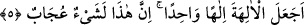
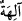
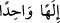
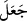
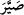
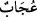
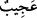
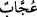

5. İlahları, tek ilah mı yaptı? Doğrusu bu tuhaf bir şeydir! dediler.
Muhammed, kendi aklınca tanrılarımızda bir ilâhlık vasfı bulunmadığını ve ilâhlığın
bunlardan sadece birinde olduğunu söyleyerek tanrıları, yâni “ilahları, tek ilah mı
yaptı?...”
Âyetin başındaki (), beğenmeme ve uzak görme anlamındadır. (), () isminin
çoğuludur. Allah’tan başka gerçek bir ma’bûd olmadığından esasen () isminin çoğul
yapılmaması gerekir. Fakat Araplar birtakım mabudlar daha bulunduğuna inandıkları
için bu kelimeyi çoğul olarak kullanmakta ve () diyebilmekteydiler.
“Bir tek tanrı” anlamına gelen () ifâdesi, “yaptı” demek olan () fiilinin
ikinci mef’ûlüdür. Çünkü bu fiil, () yâni kıldı mânâsındadır. Âyetin mânâsı şudur:
“Tanrıları, -fiilî olarak değil de, kendi inanç ve ifâdesiyle- bir tek tanrı hâline mi
getirdi?” Zira çok sayıdaki şeyi, fiilî olarak tek bir şey hâline getirmek imkânsızdır,
dediler.
Rivâyete göre Hz. Hamza ve Hz. Ömer’in de müslüman olmasından sonra aralarında
Velid, Ebû Süfyan, Ebû Cehil, Utbe, Şeybe ve Ümeyye’nin de bulunduğu Mekke eşrâfı,
sıkıntıları yüzünden ölüm hastası olarak yatmakta olan Ebû Tâlib’in yanına gelerek
şöyle dediler: “Ey Abd-i Menâf! Sen bizim en büyüğümüzden de büyüksün. Bizim ile
kardeşinin oğlu arasında hüküm vermen için sana geldik. Çünkü o, kavmin sefihlerini
bir bir aldatıyor. Yeni dinini onlar arasında yayıyor. Ayrılık ateşini toplumumuz içine
atmıştır. Yakında bu ateşi söndürmek mümkün olmayacak”. Ebû Tâlib Hz. Peygamber’i
(s.a.) çağırdı ve şöyle dedi: “Ey Muhammed! Kavmin gelmiş, senden şikâyet ediyor. Bir
defa da onların arzusuna dönmeyi düşün”. Hz. Peygamber (s.a.) ise: “Ey Kureyş
topluluğu! Benden isteğiniz nedir? diye sordu. Onlar: “Dinimizi kötülemekten vaz geç!
Tanrılarımızı kötülemeyi bırak ki biz de sana ve tâbilerine muhâlif olmayalım” dediler.
Hz. Peygamber (s.a.): “Benim de sizden bir talebim var. Bir cümle üzerinde benimle
uzlaşın ki Arap memleketleri sizin emrinizde olsun, Acem büyükleri sizin fermânınıza
uysun.” Sordular: O cümle nedir? Hz. Peygamber (s.a.): “Allah’tan başka hiçbir tanrı
yoktur ve Muhammed de O’nun elçisidir!” buyurdu. Mekke eşrâfı Hz. Peygamber’den
yüz çevirip: ‘Tanrıları bir tek tanrı mı yaptı!” demişlerdir.
İşte Hz. Peygamber’in bunlara, “Allah’tan başka hiçbir tanrı yoktur ve Muhammed
de O’nun elçisidir!” demesi üzerine, Mekkeliler Hz. Peygamber’in (s.a.) yanından
ayrılıp: ‘Tanrıları bir tek tanrı mı yaptı!” demişlerdi. Hâlbuki bu gafiller, bir tek
tanrıyı “tanrılar” hâline getirenlerin kendileri olduğunu bilmiyorlar!
“Doğrusu” atalarımızın günümüze kadar ittifakla benimsediği inanca aykırı olan
“bu,” yâni bir tek ilah olduğu fikri gerçekten “tuhaf bir şey! dediler.”
() kelimesi, () mânâsındadır ki kendisi hakkında hayrete düşülen şey
demektir. Şu kadar var ki (), () sigasından daha mübâlağalı; () ise ()